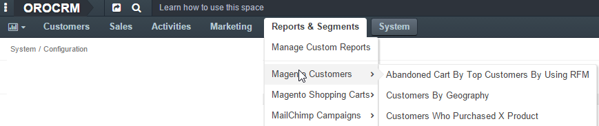
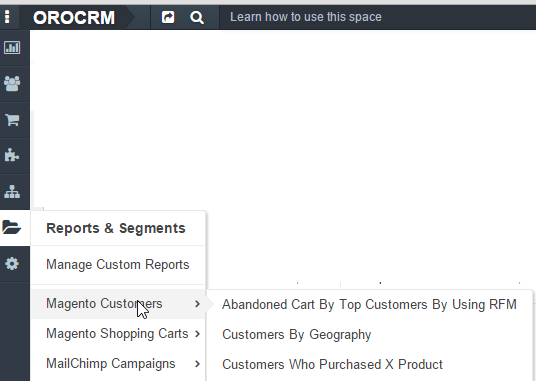
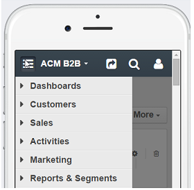
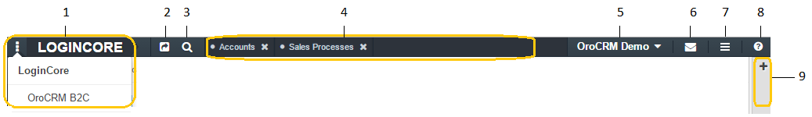

OroCommerce provides a broad set of navigation tools that allow you to easily access necessary information and tools. The system helps to ensure that frequent actions can be performed with minimal effort by keeping required information at hand. This means no important updates are missed.
This section provides an overview of the navigation elements in OroCommerce.
The menu bar is the main mode of accessing data in OroCommerce, and is always displayed on every page. Subject to your organization configuration, it may be displayed horizontally or vertically. In the latter case, the menu items will be displayed as icons.
 In the mobile version, the menu bar can be accessed via the “hamburger” button next to the organization name:
The list of menu items that are available to you depends on your access and permission settings, as defined in your organization.
Hover the cursor over a menu item to expand the drop-down menu with see the second-level items. Click on them to access any corresponding pages or grids.
At the very top of the page, there is a navigation panel that contains different navigation tools, as shown below.
| # | Item | Description | Related Document |
|---|---|---|---|
| 1 | Organization Selector | Switch between organizations when working in the multi-organization environment. | Working with Multiple Organizations section of the Company Structure and Organization Selector guide` |
| 2 | Shortcuts | Quickly perform the most common actions from anywhere in the system.” | Shortcuts |
| 3 | Search | Find a specific record details. | Search |
| 4 | Pinned pages | Open pages preserved in the state they were pinned in. | |
| Pinned Page | |||
| 5 | User menu | Access your user profile, calendar, mailbox, and task list. Log out of the system. | User Menu |
| 6 | My Emails | See if you have new and unread emails. Quickly read and reply to the most recent emails. The envelop icon reflects the current state of your mailbox - from the menu under it, you can get to the My Emails page, read and reply any of the most recent five emails, and mark all the emails as read. |
|
| 7 | Hamburger menu | Access your
|
History, Favorites and Most Viewed |
| 7 | Help Icon | Access the User Guide | |
| 8 | Sidebar panel | Hosts widgets that provide fast and convenient access to constantly needed information, such as recent emails or task lists. | Sidebar Pannel |
This way, users can easily access, store, and organize any and all information required to manage customer relations in the most efficient way.
Flash notifications and dialog windows are used by OroCommerce to notify you about something important.
If just a notification is needed (e.g., to mark the success or failure of an operation, a reminder, etc.), the flash message will appear. They may contain links to more detailed information.
If your decision is required, and OroCommerce cannot proceed without it, a dialog window will appear and will remain in place until you click a button. They usually pop up in order to warn you about something very important or irreversible, such as deleting records.
To see examples of flash messages and dialog windows, please read the Flash Notifications and Dialog Windows guide.
Related Topics